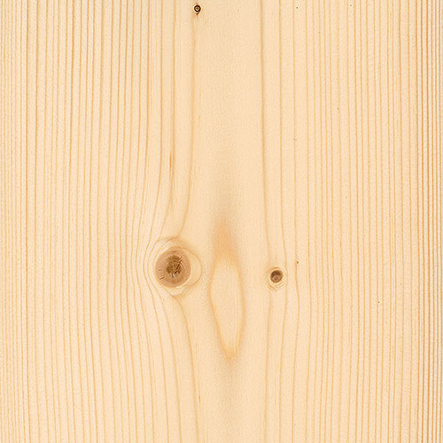
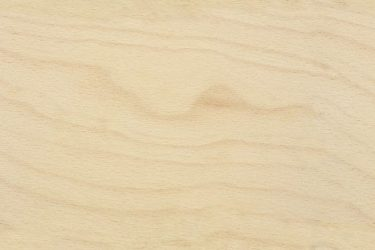
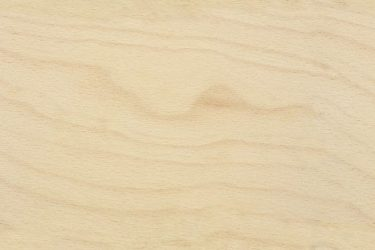

Het aanbod aan hout en andere materialen om meubels uit te vervaardigen is quasi oneindig. Bij Timmerwerkt worden volgende materialen frequent gebruikt en op stock gehouden, zo kunnen we aan voordelige prijzen aankopen en beperken we de overschotten. Waar mogelijk kiezen we er steeds voor om FSC of PEFC gelabeld materiaal te gebruiken - tropische houtsoorten verwerken we liever niet.
Voor meer info kan je terecht op op VIBE.
De Binderholz plaat is ontwikkeld voor hoogwaardige toepassingen in interieurprojecten en meubelvervaardiging. De milieuvriendelijke 3-laagse verlijming garandeert alle goede eigenschappen van massief hout met als bijkomend voordeel een stevig en duurzaam product. De productie is conform het PEFC-label voor verantwoord bosbeheer. Binderholz wordt verlijmd of gelakt.

Multiplexplaten zijn samengevat uit drie of meer (afhankelijk van aantal) op elkaar gelijmde lagen, waarvan de opeenvolgende lagen (meestal loodrecht) op elkaar staan. Zo is het een product met alle unieke eigenschappen van hout, maar daarbovenop een grotere stabiliteit en grotere afmetingen. Wij werken met Europese houtsoorten afkomstig uit productiebossen, die na houtkap opnieuw aangeplant worden – Berk, Grenen en Populier. Multiplex wordt verlijmd, of bekleed met laminaat.
 

MEDITE MDF is een MDF-plaat voor algemene doeleinden en geschikt voor de meeste toepassingen. Dit plaatmateriaal wordt gemaakt van minderewaardige houtresten en onder grote druk en bij een hoge temperatuur wordt dit samengeperst tot een plaat waarbij de natuurlijke bindingselementen van het hout als natuurlijk ‘lijm’ dienen. De platen die wij courant gebruiken zijn van 70-90% FSC-gelabeld. Op vraag kan ook de formaldehydevrije variant gebruikt worden, maar die is moeilijker te behandelen. MDF wordt typisch verlijmd of overschilderd.
Eigenlijk een constructieplaat en daarom vrij goedkoop, maar kan ook perfect gebruikt worden voor meubels uit te maken. SmartPly OSB is vervaardigd uit FSC-gelabelde houtvezels (FSC mixed sources) en formaldehydevrij verlijmd.
Van de rubberboom wordt natuurlijk afgetapt. Als de latexproductie stopt, wordt het hout van de boom benut voor het vervaardigen van massieve meubelplaten. Een soort van recyclage van de boom aan het einde van zijn levenscyclus. Rubberwood wordt verlijmd, gelakt of geolied.

Fineer is fijn hout dat van een boomstam wordt versneden tot zeer dunne vellen. Zo’n fineerlaag is gemiddeld tussen de 0.5 en 2 millimeter dik, en wordt verlijmd op een drager zoals MDF. Door de boomstam in vellen te versnijden, kan je meer waarde uit hetzelfde materiaal. We werken met Europese houtsoorten met FSC/PEFC label. Aangezien er zo veel soorten bestaan, is fineer steeds op bestelling. Gelamineerde platen worden verlijmd.
Laminaat bestaat uit meerdere lagen papier die vermengd worden met kunsthars en onder hoge druk en bij hoge temperaturen samengeperst. Laminaat is gemiddeld 0.8 mm dik. Laminaat verlijmen we veel op multiplex of MDF, en is in heel wat kleuren te verkrijgen. Het laminaat is goedkoper dan echt gekleurd.